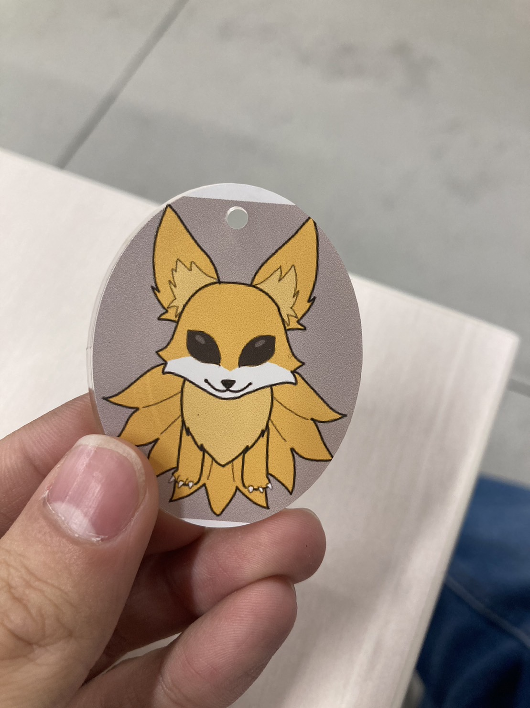

IllustratorでUVプリンター用のデータを作る
11/13 2023
デジタルファブリケーション
UVプリンターのデータについて
UVプリンターで使うデータも前回のレーザーカッター同様にIllustratorで作っていく。私の場合、fusion360でデザインを作る他にもUVプリンターはレーザーカッターと違い、イラストや写真も印刷出来るため、Ibis paintで書いたオリジナルのイラストを使っている。 今回は試しにこのきつねのイラストをアクキーにしていく。予めスマホからUSBを使ってPCにイラストのデータを移しておく。
必要なデータ
UVプリンターに必要なデータは2つあり、切り出す必要があるなら別にレーザーカッター用のデータが必要になるので実質的に3つのデータが必要だ。しかし私の場合レーザーカッター用のデータは枠のデータから使い回している。
やることは簡単で枠を作ってその中に本印刷のデザインを作る。まず枠を作る。(先にデザインのデータを取り込んだ方がいいかもしれない。)長方形ツールでだいたい40×50(mm)くらいの四角を作る。角は危ないので丸くしておく。塗りつぶしはなしで線は黒以外の1mmくらいにしておく。次にボールチェーン用の穴を開ける。楕円ツールで3×3(mm)の円を作ってさっきの枠内の通りそうな所に配置。この枠のレイヤーはレーザーカッター用に使い回すので赤にしている。そしたら太さを0.001mmにすればレーザーカッター用のもできる。
次に別レイヤーでデザインを作っていく。取り込んだデザインデータを好きなところに配置したり、Illustrator内で好きなデザインを描いていく。下地に白を吹きたい場合はこれも別レイヤーにデザインをコピペしてRolandのところから特殊な白で塗りつぶす。fablabのUVプリンター対応機種しかできないのでそれじゃない場合は後で行う。自分がわかる色で塗りつぶしておこう。
最後に別レイヤーで枠とデザインを囲む透明枠を作っていく。透明枠はその名の通り透明なので線と塗りつぶしをなしにする。なんで透明枠が必要かというと透明枠をなくした場合、枠とデザインで印刷の位置がずれてしまうからである。なので透明枠をつくり位置を固定している枠だ。
データの保存
この場合データは3つ保存する。
1つ目は枠のデータ。枠のレイヤーと透明枠のレイヤーだけ表示して.epsファイルで保存する。必ず別名で保存にする。
2つ目がデザインのデータでこれは透明枠とデザインのレイヤーの他に下地のレイヤーがあるならそれも表示して.epsで保存する。
3つ目はレーザーのデータだ。枠の部分が使いまわせるので赤の0.001㎜にして枠以外は全部非表示にして.aiで保存。
データのインポート
データをインポートする。 このとき、裏から印刷することもできる。この場合は画像を反転させることがソフト上でできるので反転させる。デザインに下地が含まれる場合、品質からモードを設定する。
UVプリンターのセットアップ
UVプリンターをセットアップする。setupボタンを長押しして少し経ったらまた押す。高さを100.2㎜にした後enterを押し自動調整をいいえにしてenter,その後enterを三回押せば完了。枠を印刷する。
枠の印刷が終わったらその枠にそってあらかじめレーザーカットした素材をおいてセットアップを行う。大体さっきと同じだ。setupボタンを長押しして少し経ったらまた押す。素材を奥にテーブルごと移動させたら音が鳴るまでテーブルを上げる。音がなった位置から1㎜位高さを落としてenterを押し自動調整をいいえにしてenter,その後enterを三回押せば完了
プリントの様子
完成品
使用したデータ
→データのダウンロードはこちら元イラスト